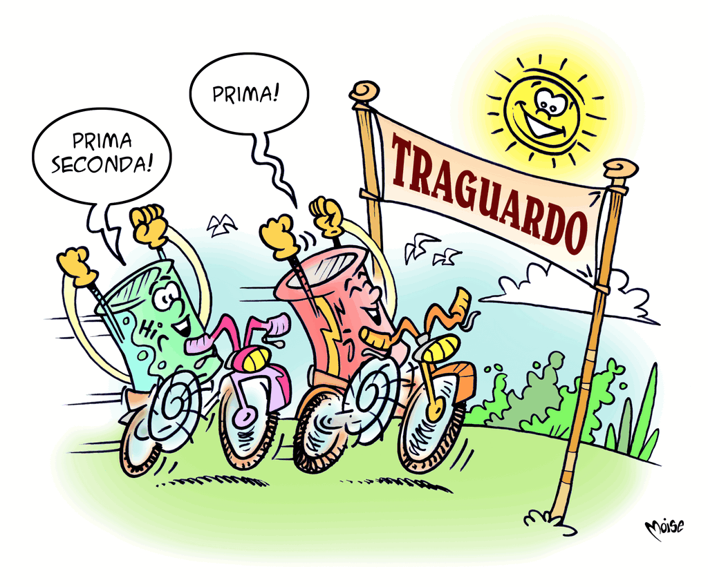

Materie Prime
Come si può ridurre il consumo di materie prime e di energia? Utilizzando materie prime seconde! Le materie prime seconde (o secondarie) sono costituite, oltre che da scarti di lavorazione delle materie prime, dai materiali derivati dal recupero e dal riciclaggio dei rifiuti.
Metalli, vetro, carta, plastiche sono selezionate con la raccolta differenziata, riciclate grazie alla tecnologia e reimmesse nel ciclo di produzione.
E naturalmente, oltre al risparmio energetico ed economico, il riutilizzo della stessa materia in più cicli produttivi consente di ridurre notevolmente la quantità di rifiuti.
